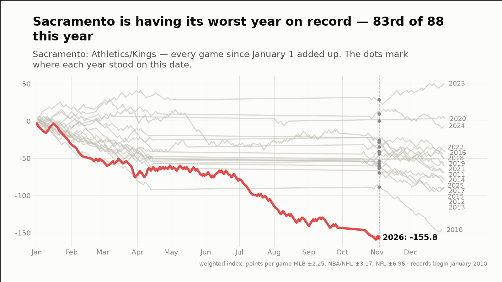
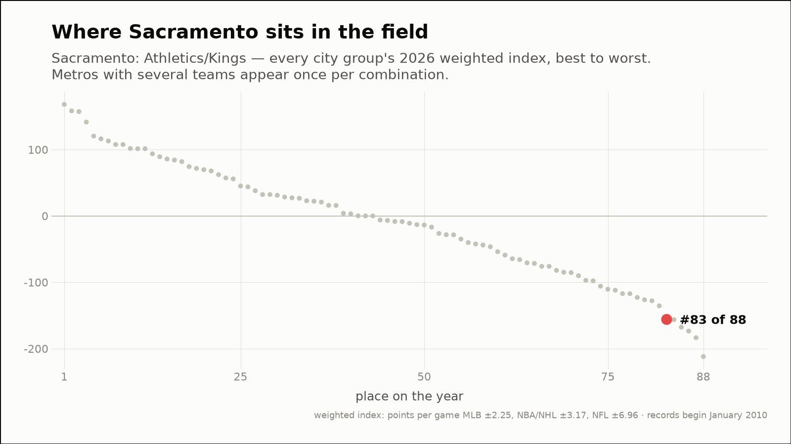
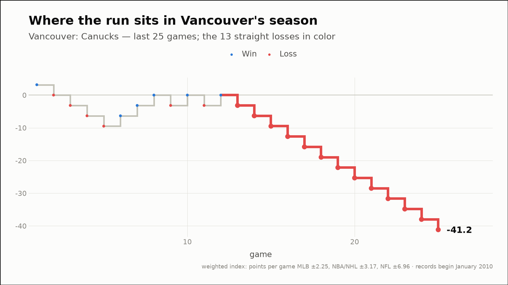
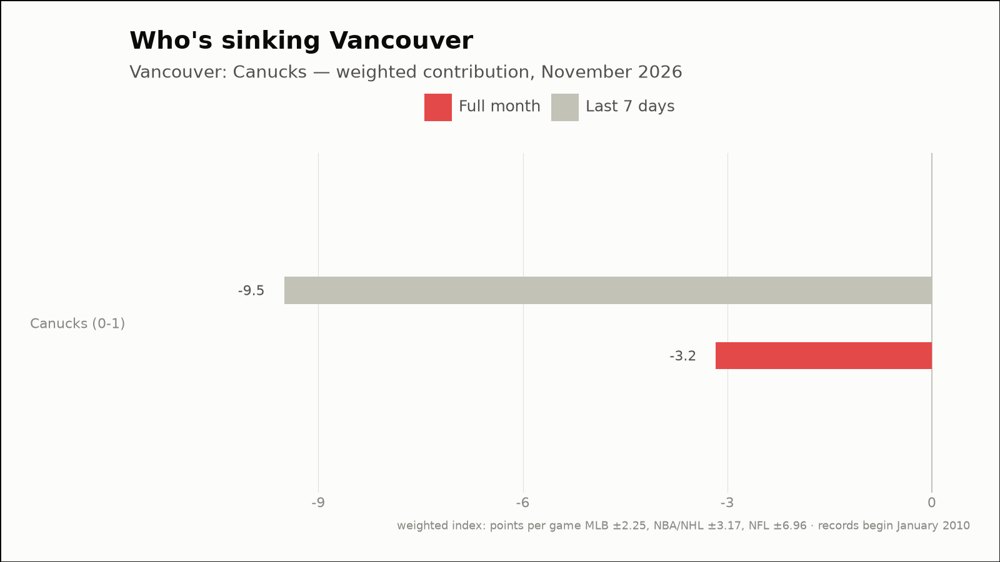
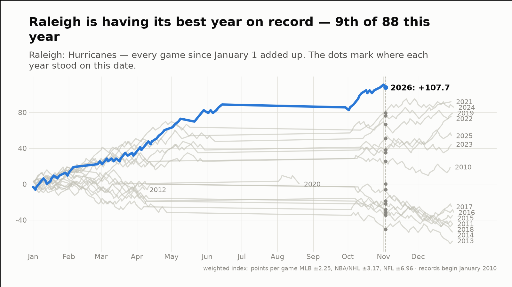
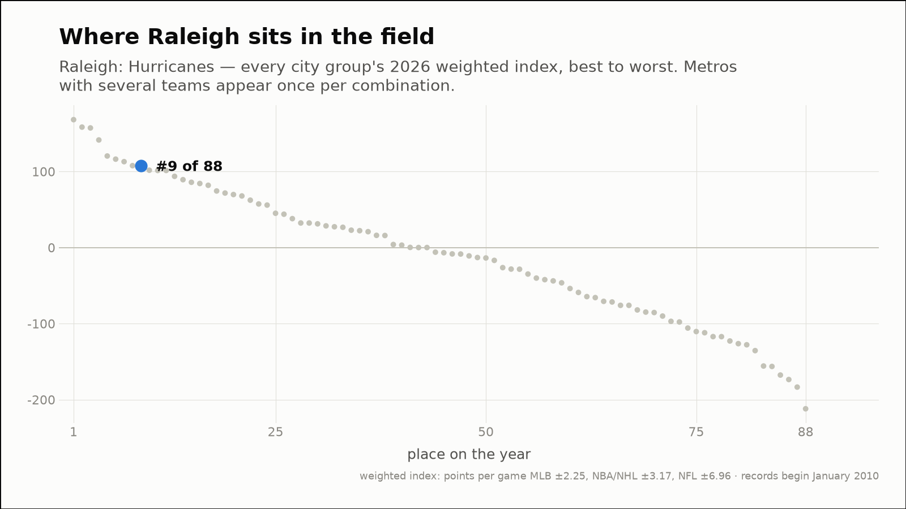

Out of the norm — three fandoms off their own script
The weekly hunt across all 88 city groups, through November 3, 2026
Sacramento is having its worst year on record — 83rd of 88 this year
Sacramento: Athletics/Kings
- 2026 so far (through November 3)
- 79-138, -155.8 weighted — the worst of the 17 years on record, at the same point
- Against the field
- 83rd of 88 city groups on the year (6th percentile)
- This month (through November 3)
- 1-0, +3.2 weighted
- Last 7 days
- 1-2, -3.2 weighted
- Driving it this week
- Kings (1-2, -3.2)


Vancouver's teams have lost 13 straight — their longest run on record
Vancouver: Canucks
- The run
- 13 straight losses since October 4, 2026, -41.2 weighted (no run this long on record)
- This month (through November 3)
- 0-1, -3.2 weighted
- Last 7 days
- 0-3, -9.5 weighted
- Driving it this week
- Canucks (0-3, -9.5)
- Active streaks
- Canucks L13


Raleigh is having its best year on record — 9th of 88 this year
Raleigh: Hurricanes
- 2026 so far (through November 3)
- 56-22, +107.7 weighted — the best of the 17 years on record, at the same point
- Against the field
- 9th of 88 city groups on the year (91st percentile)
- This month (through November 3)
- 1-1, +0.0 weighted
- Last 7 days
- 2-1, +3.2 weighted
- Driving it this week
- Hurricanes (2-1, +3.2)

